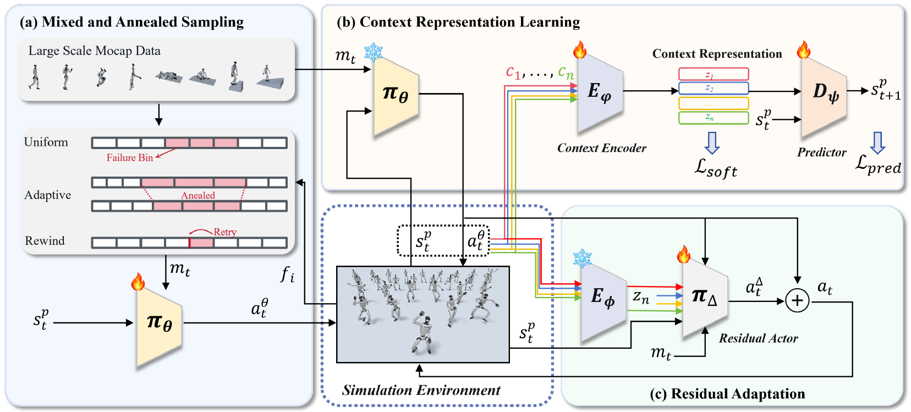
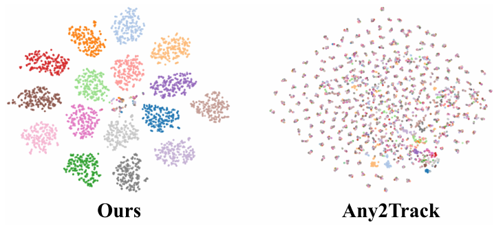
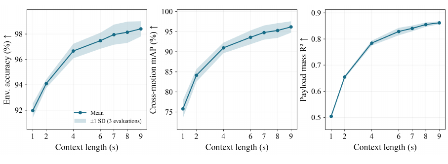

Build the behavior prior
Mixed and Annealed Sampling balances targeted retries of difficult motions with broad coverage of the motion corpus while pretraining ECHO-PRE.
Anonymous project page
ECHO pairs a broadly trained whole-body behavior prior with a context-conditioned residual controller.Recent proprioceptive and action history informs adaptation to changing physical dynamics, without test-time parameter updates.
A broad motion-tracking prior supplies the skill; interaction context adjusts how that skill is executed.

Mixed and Annealed Sampling balances targeted retries of difficult motions with broad coverage of the motion corpus while pretraining ECHO-PRE.
A context encoder learns from state-action histories using dynamics prediction and physical-neighborhood soft alignment.
A residual actor uses the learned context to adjust the frozen prior. The prior and encoder remain frozen during residual-policy training.
Motion-tracking results from the anonymous manuscript. SR is success rate; arrows show the preferred direction.
MIAS improves the pretrained policy on both everyday and high-dynamic motions; CRA further improves tracking precision under nominal dynamics.
| Method | SR ↑ | Eg-MPJPE ↓ | EMPJPE ↓ | Eacc ↓ | Evel ↓ |
|---|---|---|---|---|---|
| AMASS-2000-Random | |||||
| SONIC v1.1 | 0.9633 ± 0.0003 | 316.651 ± 1.649 | 30.411 ± 0.015 | 1.135 ± 0.002 | 3.770 ± 0.006 |
| HEFT | 0.9785 ± 0.0009 | 261.573 ± 2.352 | 28.524 ± 0.009 | 1.062 ± 0.001 | 3.103 ± 0.004 |
| ECHO-PRE w/o MIAS | 0.9720 ± 0.0005 | 331.235 ± 2.132 | 32.580 ± 0.018 | 1.243 ± 0.003 | 4.170 ± 0.008 |
| ECHO-PRE | 0.9832 ± 0.0012 | 207.995 ± 0.970 | 26.595 ± 0.007 | 0.932 ± 0.003 | 3.036 ± 0.006 |
| ECHO-N | 0.9827 ± 0.0003 | 203.149 ± 0.289 | 25.577 ± 0.024 | 0.917 ± 0.003 | 2.956 ± 0.007 |
| BONES-SEED-100-HighDynamic | |||||
| SONIC v1.1 | 0.5800 ± 0.0100 | 343.124 ± 4.421 | 61.791 ± 2.615 | 4.086 ± 0.031 | 10.406 ± 0.102 |
| HEFT | 0.6200 ± 0.0173 | 391.094 ± 30.758 | 59.562 ± 0.135 | 3.232 ± 0.017 | 8.229 ± 0.138 |
| ECHO-PRE w/o MIAS | 0.4500 ± 0.0100 | 365.075 ± 5.270 | 64.580 ± 0.025 | 4.297 ± 0.042 | 11.712 ± 0.145 |
| ECHO-PRE | 0.7200 ± 0.0000 | 244.772 ± 3.143 | 56.521 ± 0.335 | 2.801 ± 0.012 | 7.507 ± 0.034 |
| ECHO-N | 0.7633 ± 0.0115 | 235.410 ± 4.140 | 55.392 ± 0.415 | 2.766 ± 0.005 | 7.360 ± 0.017 |
Table 2 · Mean ± sample standard deviation over three runs with independent action-noise seeds (σ = 0.01). AMASS-2000-Random tests everyday motions excluded from training; BONES-SEED-100-HighDynamic tests challenging motions within the training distribution.
Takeaway. On the high-dynamic benchmark, ECHO-N reaches 0.7633 SR versus 0.4500 for the same prior trained without MIAS.
Interaction history reveals the physical environment and informs adaptation.


Explore acrobatics, ground and terrain interaction, and in-context adaptation.